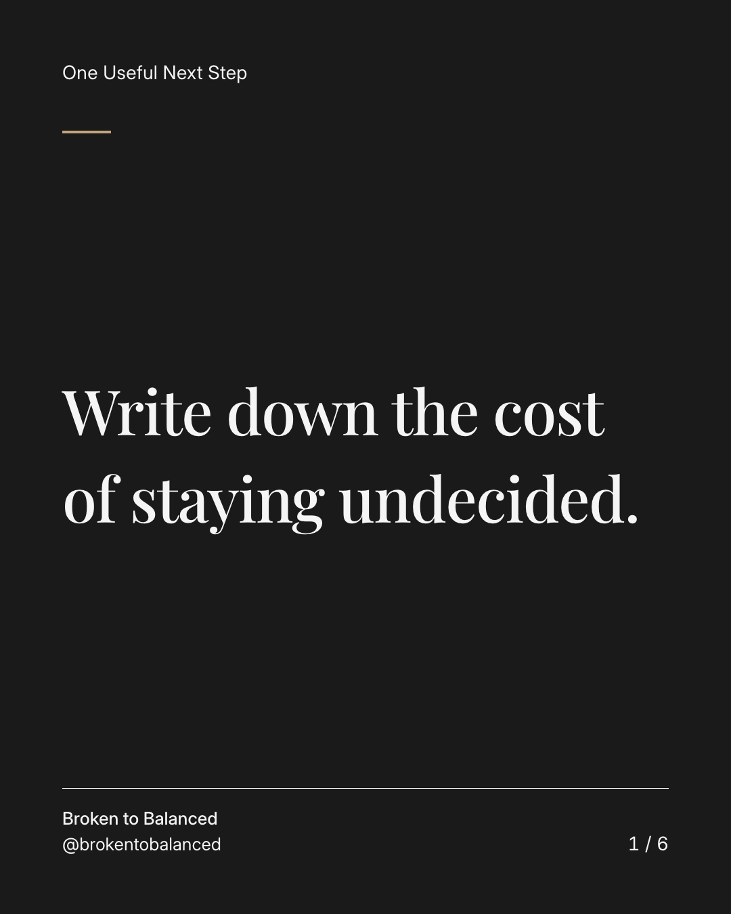
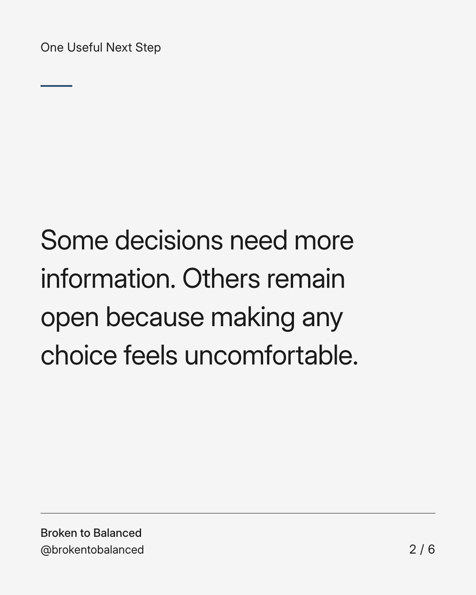
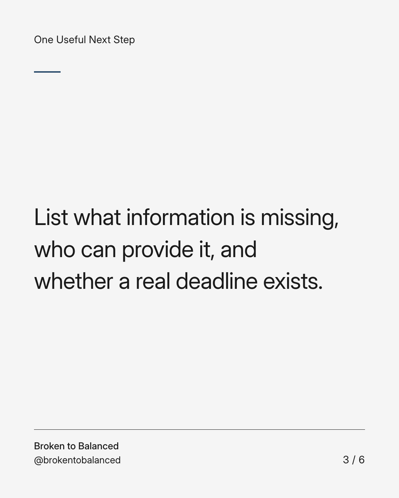
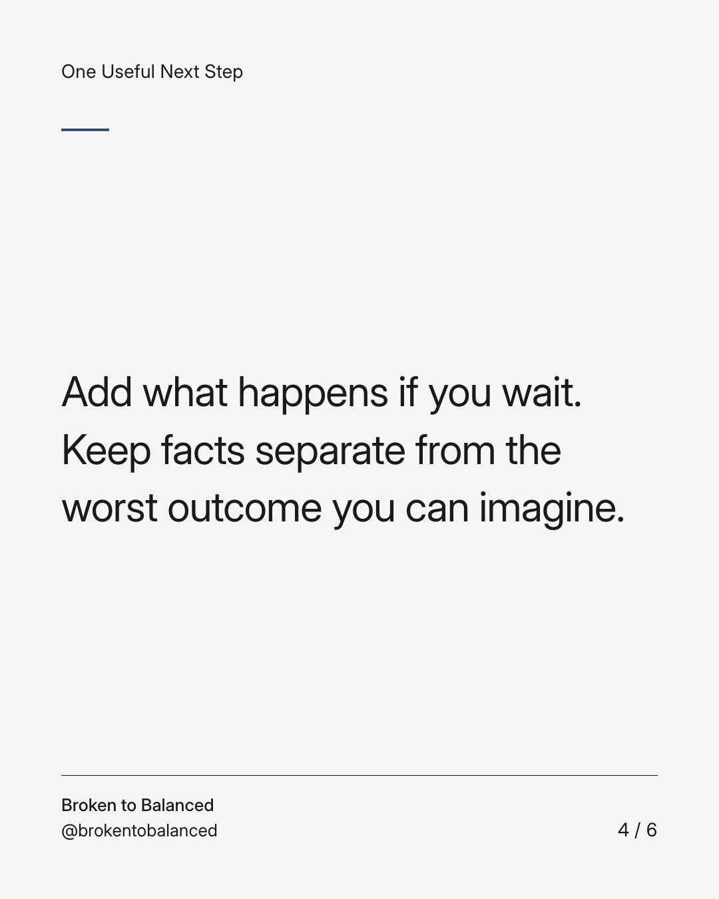
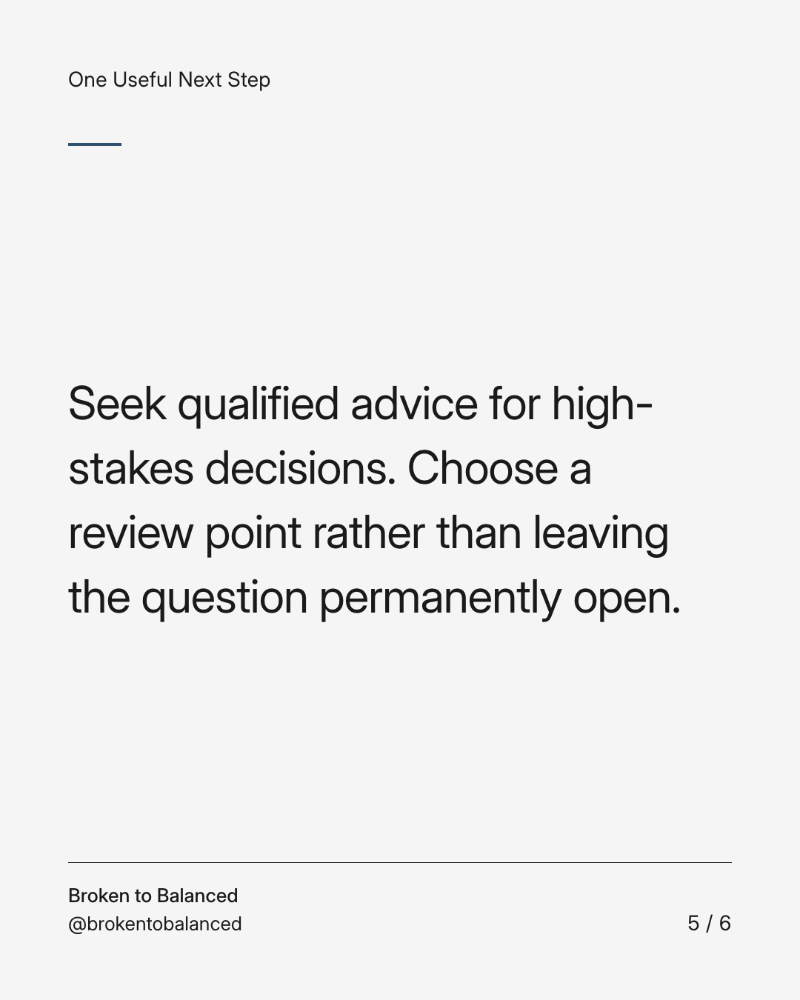
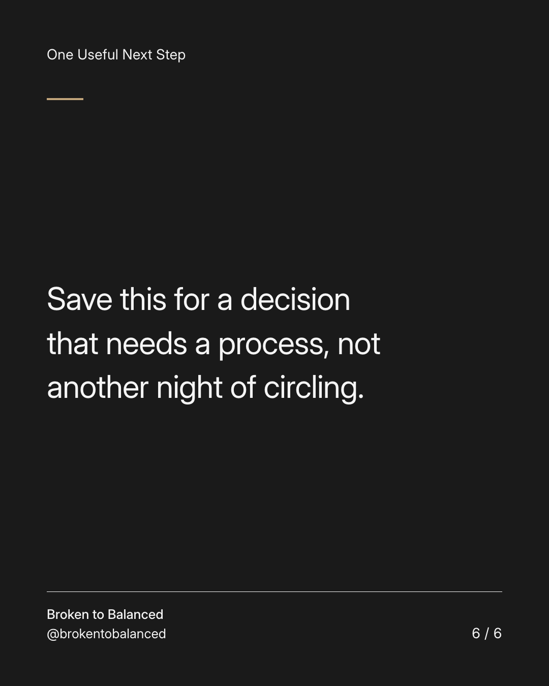

Exact text and accessibility text
Write down the cost of staying undecided.
Slide 1 of 6. Write down the cost of staying undecided.


Exact text and accessibility text
Some decisions need more information. Others remain open because making any choice feels uncomfortable.
Slide 2 of 6. Some decisions need more information. Others remain open because making any choice feels uncomfortable.


Exact text and accessibility text
List what information is missing, who can provide it, and whether a real deadline exists.
Slide 3 of 6. List what information is missing, who can provide it, and whether a real deadline exists.


Exact text and accessibility text
Add what happens if you wait. Keep facts separate from the worst outcome you can imagine.
Slide 4 of 6. Add what happens if you wait. Keep facts separate from the worst outcome you can imagine.


Exact text and accessibility text
Seek qualified advice for high-stakes decisions. Choose a review point rather than leaving the question permanently open.
Slide 5 of 6. Seek qualified advice for high-stakes decisions. Choose a review point rather than leaving the question permanently open.


Exact text and accessibility text
Save this for a decision that needs a process, not another night of circling.
Slide 6 of 6. Save this for a decision that needs a process, not another night of circling.
Exact caption
Plain-text fallback: select and copy the caption.